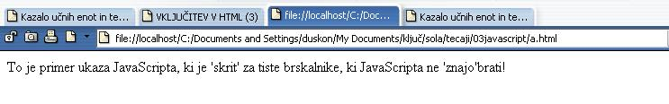

Ljudje niso namenoma zlobni, paè pa iz nevednosti. Èe želimo delati dobro, moramo vedeti, kaj je dobro. (Sokrat)
 Slika 1 in 2: Obravnava preprostih brskalnikov - koda in videz spletne strani
1. Izdelaj spletno stran, ki bo izgledala tako, kot kažeta sliki 1 in 2. Datoteko poimenuj "04apriimek.html". Ne pozabi na konènico ".html". POZOR: Najprej NATANÈNO izdelaj vajo v tej uèni enoti in jo pokaži profesorju, nato zapiši odgovore na spodnja vprašanja. 2. V kodo primera v tej uèni enoti vstavi spodaj navedene komentarje na ustrezna mesta, ki jih ti komentarji pojasnjujejo. //Ukaz za izpis v JavaScriptu. //Konèna znaèka HTML dokumenta. //Konèna znaèka skripta v HTML dokumentu. //Zaèetna znaèka HTML dokumenta. //Zaèetna znaèka skripta v HTML dokumentu. 3. Kodo primera v tej uèni enoti spremeni tako, da bo izpis na spletni strani vseboval še dve vrstici. V prvi vrstici zapiši svojo starost, v drugi vrstici pa zapiši svoj rojstni datum. 1. Vprašanja za usmerjanje pozornosti in usvajanje novih besed: 1. Kako prikažejo kodo JavaScripta tisti brskalniki, ki JavaScripta ne podpirajo? 2. Kako obièajno rešimo problem, ki smo ga nakazali v toèki 1? 3. Zapiši v zvezek znaèko za komentar v HTML! 4. Zapiši v zvezek znaèko za komentar v JavaScript! 2. Zapiši od ene do pet kljuènih besed, ki povzemajo vsebino te uène enote. 3. Vprašanja za razmislek in povezovanje z lastno izkušnjo: 1. Kakšna je naloga ukaza document.write( ) v primeru na sliki? 2. Kakšen je argument ukaza document.write( ) v primeru na sliki? Zapiši ta argument v zvezek. 3. Kakšna je naloga znaèke <!-- in --> v primeru na sliki? 4. Kakšna je naloga znaèke // v primeru na sliki? 4. Domaèa naloga: 1. V zvezek prepiši misel, ki je zapisana na zaèetku uène enote z rdeèimi èrkami. Zabeleži nekaj lastnih misli, ki se ti utrnejo ob razmišljanju o njej. 2. Odgovori na vprašanja, na katere nisi uspel/a odgovoriti v šoli. 5. DODATNO DELO: |